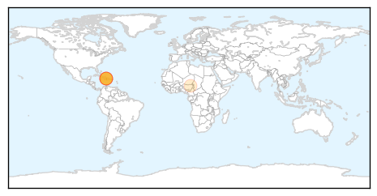
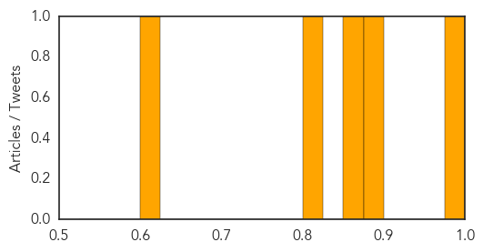

Toggle navigation
Early Warning
Daily Alerts
Cholera
Feb 10, 2014
Compare to:
-
Dengue Fever
Hemmorhagic Fever
Mold/Fungal Infection
Influenza
Meningitis
Pertussis / Whooping Cough
Middle East Respiratory Syndrome
Hepatitis
Chikungunya
Yellow Fever
Bubonic Plague
West Nile Virus
Swine Flu
Ebola
Measles
Unknown
Mumps
30 Day Trends
Web: 0
alerts
, 0
warnings
Twitter: 4
alerts
, 0
warnings
Top Articles:
0.986
How the UN Can Ignore 8,000 Deaths in Haiti
0.890
Andrew Square activist continues to push the United Nations to address the cholera epidemic it has caused in Haiti
0.874
Andrew Square activist continues to push the United Nations to address the cholera epidemic it has caused in Haiti
0.804
Neglected Tropical Diseases Hamper Poverty Fight
0.617
Outbreak! New cholera deaths reported in Nigeria
Top Tweets:
No tweets found for Feb 10, 2014
Web/News Articles
Tweets
Article Locations

Article Confidences
